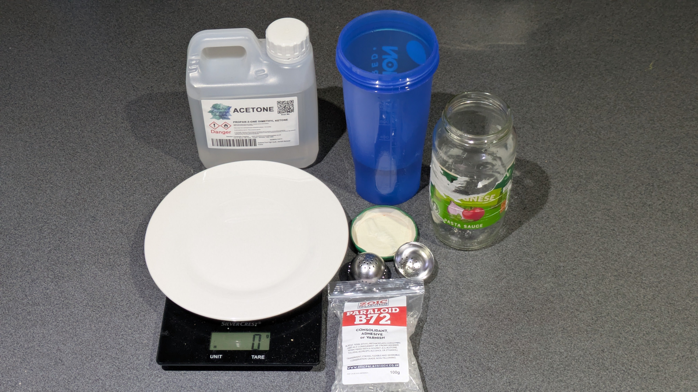
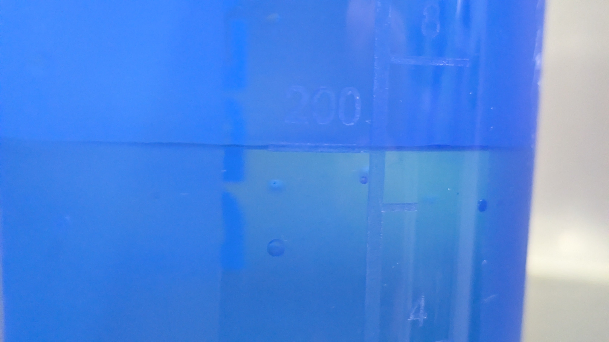
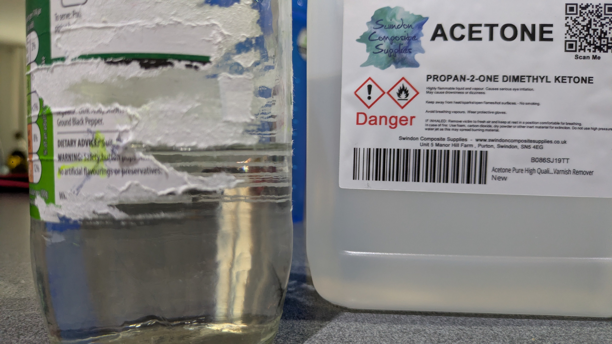
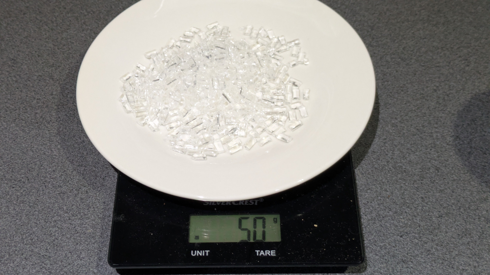
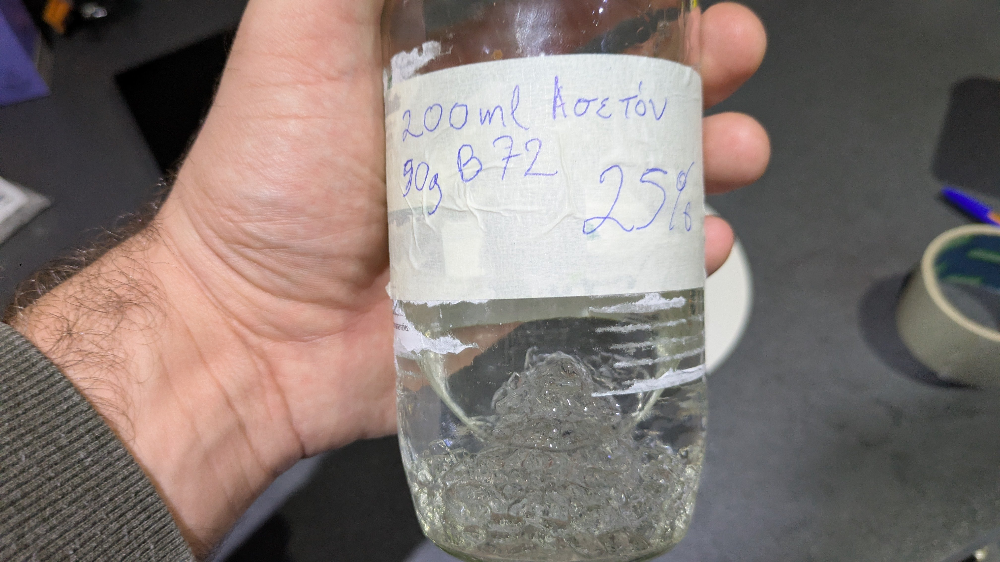
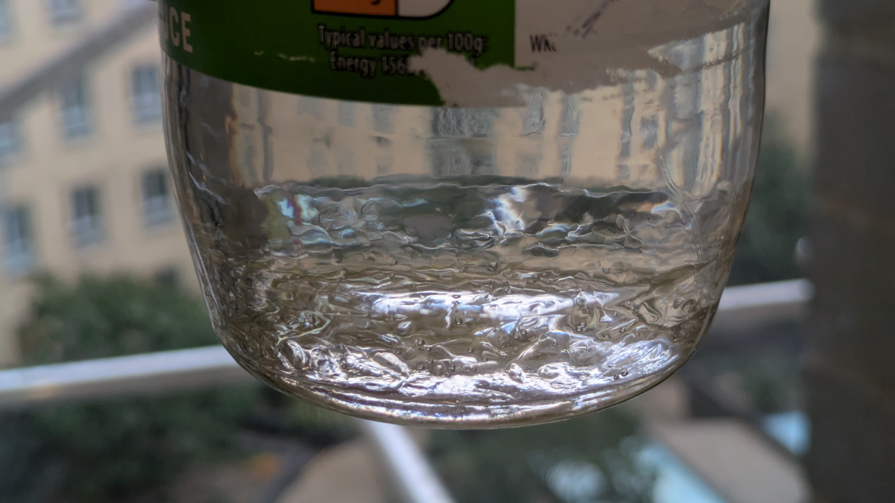
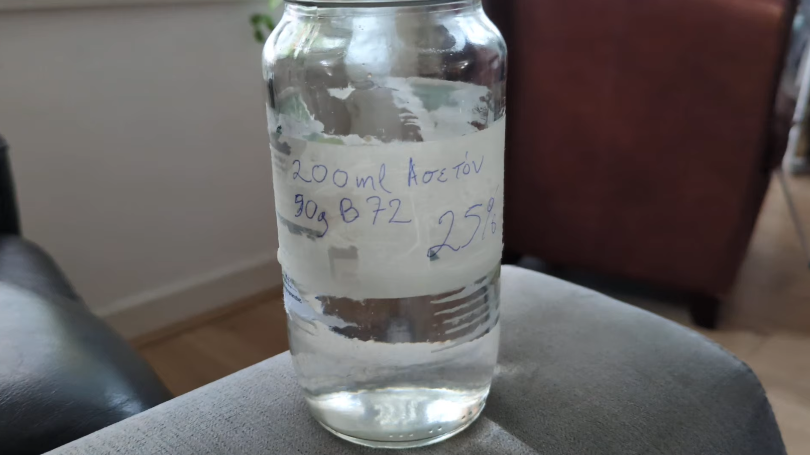
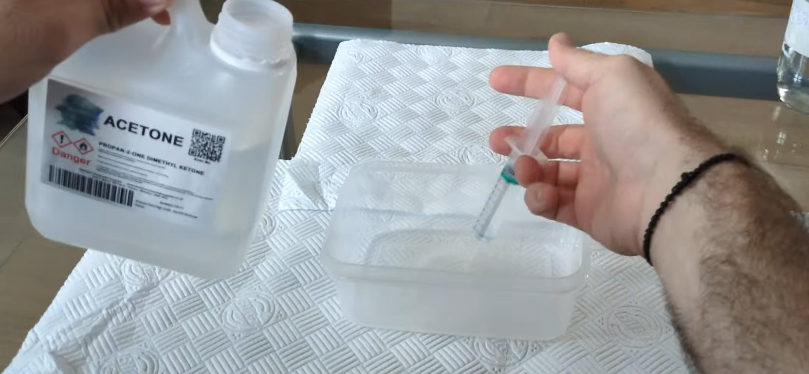
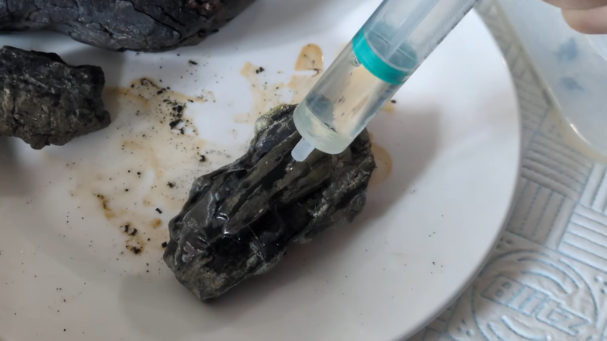
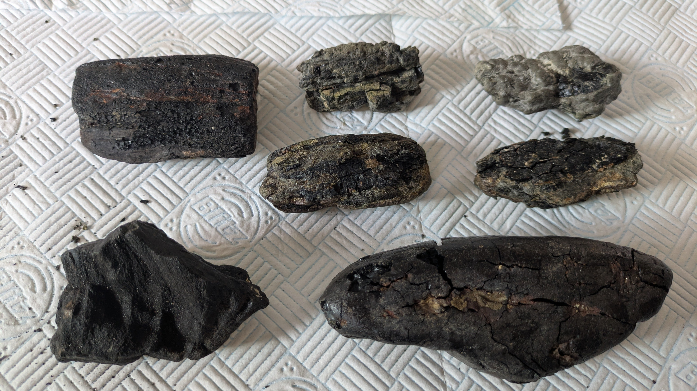

Motivation
Many times, when returning from a fossil-hunting trip, the finds, especially the less remarkable ones, go through a period during which they are abandoned in a corner, inside a box or bag, waiting for someone to eventually deal with them. This is exactly what happened with some carbonized Cretaceous fossil wood that I had collected some time ago from Compton Bay.
When I finally turned my attention to them, I realized they were extremely fragile and that, over time, they would disintegrate into crumbs unless I did something to conserve them. Searching online for solutions, I came across the conservation method using Paraloid B-72, which, depending on the concentration of B-72 in the mixture, can be used either as a (reversible) adhesive or for consolidation and stabilization of specimens.
Preparation
I ordered the materials required for preparing the mixture:
- Pure acetone
- not nail-polish remover. Initially I had bought acetone-based remover from the supermarket, but later decided it would be better to use pure acetone.
- Paraloid B-72.
Additionally, I used:
- A glass jar (formerly containing pasta sauce) for the mixture
- A digital scale
- A graduated measuring cup (courtesy of my flatmate who drinks protein shakes)
A hanging tea infuser- This was for an idea I tried, but in the end it turned out not only to be unnecessary, but it also ruined my infuser :(

Preparation of a concentrated adhesive solution
I decided to prepare a 25% (w/vol) mixture in the glass jar. That is, I dissolved 50 g of B-72 in 200 ml of acetone. This is a high-concentration (gel-like) mixture, and my intention was to further dilute part of it for immediate use, while storing the remainder in the jar.
To avoid putting acetone into my graduated measuring cup, I first poured 200 ml of water into it. I transferred the water into the glass jar and marked the water level. I then poured the water down the sink and filled the jar with acetone up to the marked level. It should be noted that the smell of acetone was very strong at this stage; proper ventilation is strongly recommended!


I then added the 50 g of B-72 I had prepared to the jar containing the acetone.

Then came the disaster. I attempted to use the tea infuser according to methods I had seen online. However, the infuser’s chain broke and it fell into the acetone. I removed it with a teaspoon while wearing gloves. By that time, however, the B-72 I had already added had begun dissolving into a sticky, transparent tar-like substance. I had considerable difficulty emptying the infuser as much as possible, and then cleaned it using the nail-polish remover I had (mistakenly) bought earlier.
After dealing with this small mishap, and returning as much B-72 as possible back into the acetone mixture, I left the mixture undisturbed. Before doing so, I labeled the jar with the quantity, concentration, and ingredients of the mixture.

After 2.5 hours
The B-72 had dissolved approximately halfway. The remainder was sitting at the bottom as an amorphous mass.

After 24 hours
The mixture finally appeared ready. I stirred it occasionally using a disposable wooden knife, until eventually all the B-72 plastic had dissolved and the thick mixture was ready for use, with no traces of undissolved material at the bottom.

Fossil conservation
I mixed 20 ml of my pre-prepared 25% solution with 80 ml of acetone in a plastic container (after first checking that the container was compatible with acetone!). The new mixture contained 5% B-72 w/vol (5 g per 100 ml). A solution of such low concentration is quite fluid, allowing it to be absorbed by the fossil’s surface and penetrate it. The acetone then evaporates, leaving the B-72 behind inside the fossil, thus stabilizing it internally.

That was the plan, at least. Let’s see what actually happened in practice.
I tried two methods of application: using a syringe, and via a “bath”; that is, immersing the specimen and literally soaking it in the mixture. The latter method proved risky: the first fossil I attempted to immerse was very unstable and absorbed too much liquid, becoming saturated and even more fragile. From that point onward, I applied the mixture exclusively using a syringe.

Splashes and accidents are inevitable, so I recommend performing this experiment wearing old clothes, outdoors, and somewhere you would not mind getting a bit messy. During one attempt to apply the solution with the syringe, it slipped from my hand and splashed some of the mixture onto my phone case. The acetone evaporated quickly, but the B-72 stains are still there…!

In the end, I left my specimens to dry until the next day before storing them. I am not sure whether I am fully satisfied with the results of this attempt. These are the changes I observed in my samples:
- Darker color - which I would say made them look slightly nicer, or even more “significant”
- Increased weight - I believe the additional mass of B-72 was noticeable
- Acetone smell - this will likely fade over time, but it remains strong for quite a while
I am not certain whether the specimens became truly more consolidated. Some of them still crumble at the surface and may require application of a more concentrated B-72 mixture. Overall, however, I have the impression that they are more stable than before.